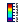
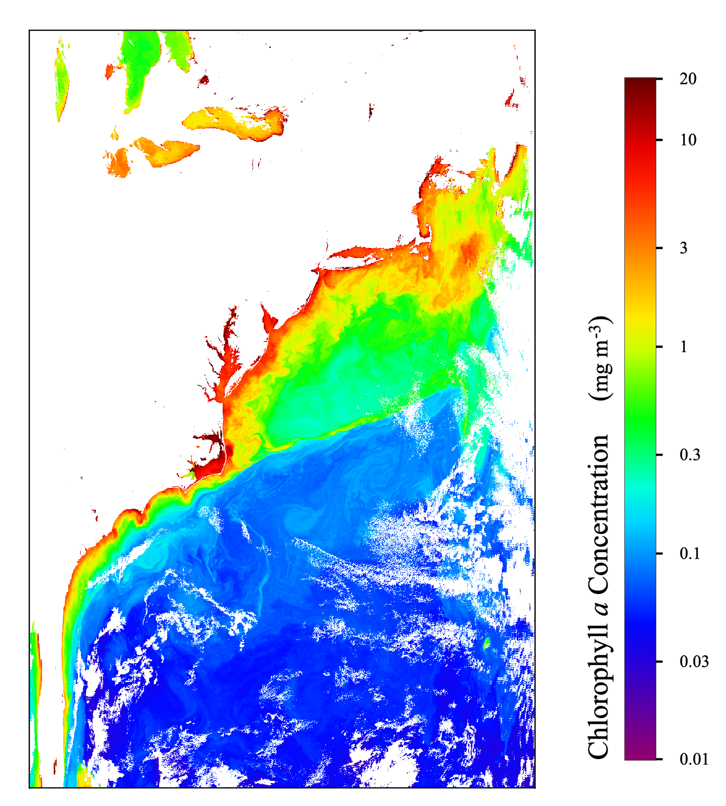

| Color Bar Legend | |

The Colorbar Legend Layer tool creates an image overlay containing a colorbar legend. Parameters of the Colorbar Legend Layer are editable in the Layer Editor as well as in the Preferences
A color bar legend is a representation of the color palette and it's associated scene product values. There are two separate but interrelated tools for creating color bar legends: one adds the legend as a layer on a scene image, the other exports the legend as its own file. A single preferences page is available which governs both of these tools. (Note: color bars can only be created for non-RGB images.)
The 3 Tools ("Color Bar Legend Layer Tool", "Color Bar Legend Export Tool", and "Color Bar Legend Preferences") all share almost the same fields so they are all consolidated here in this single help page, with notation regarding any fields which not applicable to all tools.
Color Bar Legend Layer Tool: To add a Color Bar Layer, toggle the color bar Layer Tool select "/Layer/Color Bar Legend". The "Layer Editor" is used for editing the Color Bar parameters (inside the Layer Manager click "ColorBar" and then the pencil icon).
Color Bar Legend Export Tool: To open the color bar Export Tool select "/File/Export/Other/Color Bar Legend" or from with the scene image right-click and select "Color Bar Legend"
For the Color Bar File Export tool, if a Color Bar layer already exists, then the Color Bar Export Tool will use the same initial settings as the layer image. If there is no layer then the initial settings come from the preferences.
Color Bar Legend Preferences: To open the color bar legend preferences window select "/Tools/Options/Color Bar Legend" from the main menu (Note: this may be located instead in File/Preferences on the Mac).

Image 1: Colorbar Legend Layer shown over a MODIS Aqua level-2 scene image
These fields are the text to be placed as the title of the color bar legend.
‣ Show Title:
Whether or not to display the "Title Text" on the color bar legend image
‣ Apply Scheme Title/Units (Band Lookup):
Performs a lookup based on band name to retrieve any pre-set titles and/or units.
Default scheme files:
~/.seadas9/auxdata/color_schemes/color_palette_scheme_lookup.xml
~/.seadas9/auxdata/color_schemes/color_palette_schemes.xml
User editable scheme files:
~/.seadas9/auxdata/color_schemes/color_palette_scheme_lookup_user.xml
~/.seadas9/auxdata/color_schemes/color_palette_schemes_user.xml
‣ Title:
The text to be placed as the title of the color bar.
Supports inline replacement variables for metadata:
<PROPERTY={key}>
<FILE_META={key}> (alternate key name <GLOBAL_ATTRIBUTE={key}>
<BAND_META={key}> (alternate key name <BAND_ATTRIBUTE={key}>
Supports several html tags:
<i>, <b>, <sup>, <sub>
These fields are the text to be placed as the units of the color bar legend.
‣ Show Units:
Whether or not to display the "Units Text" on the color bar legend image.
‣ Units:
The text to be placed as the units of the color bar.
Supports inline replacement variables for metadata:
<PROPERTY={key}>
<GLOBAL_ATTRIBUTE={key}>
<BAND_ATTRIBUTE={key}>
Supports several html tags:
<i>, <b>, <sup>, <sub>
‣ Units Null Value:
The text to be placed as the units when units are null.
‣ Add Units Parenthesis:
Adds parenthesis around the units placed on the color bar.
‣ Convert Carets to Superscripts:
Converts carets found in the text to superscripts.
(i.e. 'e = mc^2' would display as 'e = mc2')
These fields determine the actual data values and data formatting to use for the tick marks labels.
‣ Show Labels:
Whether or not to display the "Labels Text" on the color bar legend image.
‣ Apply Scheme Tick Values (Band Lookup):
Performs a lookup based on band name to retrieve any pre-set tick values.
Default scheme files:
~/.seadas9/auxdata/color_schemes/color_palette_scheme_lookup.xml
~/.seadas9/auxdata/color_schemes/color_palette_schemes.xml
User editable scheme files:
~/.seadas9/auxdata/color_schemes/color_palette_scheme_lookup_user.xml
~/.seadas9/auxdata/color_schemes/color_palette_schemes_user.xml
‣ Label Value Mode:
Sets the actual data values of the labels:
• Generated Values:
The values will be auto-generated based on the number of desired
tick marks as specified in the "Label Count" textfield in this section.
• Entered Values:
The values used are manually entered in the "Label Values" textfield.
• Palette Values:
Exact values will be used which are in the palette definition file.
‣ Label Count:
The desired number of tick marks to be auto-generated onto the color bar
(only used for Mode: "Generated Values").
‣ Label Values:
The values are manually entered here when in mode "Entered Values".
The labels are placed in the corresponding data location on the color bar.
In this mode values will appear with data format exactly as they are entered and no decimal
place adjustments occur.
You may use the following value-text pairs syntax to use custom text to represent numbers:
"{NUMBER}:{TEXT}, NUMBER:{TEXT}", (For example "Label Values" = "0.01:low, 1.0:medium, 20.0:high")
‣ Label Scaling:
A multiplier to apply to the displayed label value. Note that using
a value not equal to "1.0" will essentially change your units and you may wish to adjust
your "Units Text" accordingly. For example: if the raw data value is 0.001 and units are meters,
then setting "Label Scaling" = "1000" will display the data as "1" on the color bar, and then you
correspondingly specify "Units Text" = "(millimeters)".
‣ Auto-Fill Label Values Textfield:
Auto-populate the Label Values field with the generated values. This is useful
is you wish to edit the auto-generated values, but it has the side effect of causing the other entry textfields
of the Color Bar Legend Tool entry form to be wide.
‣ Decimal Places:
The decimal places to use (Note: does not apply to Mode = "Entered Values")
‣ Force Trailing Decimal Zeros:
Force the full decimal places by adding all trailing zeros instead of truncating.
For example if "Trailing Decimal Places" is selected and "Decimal Places" = "2" then the raw data value "0.2"
will be displayed as "0.20" instead of "0.2". (Note: does not apply to "Mode" = "Entered Values")
These fields set the orientation parameters of the color bar legend.
‣ Angle:
Sets the alignment of the color bar to either vertical or horizontal.
• Best Fit:
Places colorbar vertically or horizontally based on comparison of scene aspect
ratio with the value of 'Scene Aspect Ratio'
• Horizontal:
Places colorbar horizontally on the image
• Vertical:
Places colorbar vertically on the image
‣ Scene Aspect Ratio:
The scene ratio which governs horizontal vs vertical placement when Angle='Best Fit'
‣ Title Placement:
Determines where to place the colorbar title on the legend for a vertically aligned colorbar.
‣ Reverse Palette & Labels:
Reverses the direction of the palette along with it's labels.
‣ Scale to Scene Size (LAYER TOOL ONLY):
Resizes the full legend image to a percentage of the size the scene image
as specified with the value of 'Scene Size Scaling'.
• No Scaling:
Use Colorbar Length and Colorbar Width fields with no scaling to scene image.
• Scale by Colorbar Thickness:
Scale by thickness of colorbar relative to the average dimensions of the scene.
• Scale by Colorbar Length:
Scale by length of colorbar relative to the side of the scene which it is next to.
‣ Scene Size Scaling (LAYER TOOL ONLY):
The percentage which is used when 'Scale to Scene Size' is specified.
‣ Scale to File Size (EXPORT TOOL ONLY):
Resizes the full legend image to the size specified in the textfield "File Size".
‣ File Size (EXPORT TOOL ONLY):
Width (in pixels) of legend image file (height if vertical image) if "Scale to File Size" has been selected.
‣ Color Bar Length:
Length (in pixels) of the color bar (just the color bar itself and
not the full color bar legend image.)
‣ Color Bar Width:
Width/thickness (in pixels) of the color bar (just the color bar itself and
not the full color bar legend image.)
These fields set the placement location anchor of the color bar image legend on the scene image.
‣ Inside Scene Image (LAYER TOOL ONLY):
Place color bar inside/outside scene image bounds.
‣ Location (Horizontal) (LAYER TOOL ONLY):
Anchor location for placement of horizontal colorbar on the scene image.
‣ Location (Vertical) (LAYER TOOL ONLY):
Anchor location for placement of vertical colorbar on the scene image.
‣ Location Offset (Outside) (LAYER TOOL ONLY):
Gap (in by percentage of average scene dimensions) between colorbar legend and edge
of scene image when placed outside of scene image.
‣ Location Offset (Inside) (LAYER TOOL ONLY):
Gap (in by percentage of average scene dimensions) between colorbar legend and edge
of scene image when placed inside of scene image.
‣ Location Shift (LAYER TOOL ONLY):
Shift colorbar location along edge of scene by percentage of average scene dimensions.
Specifies the font formatting for the title text. ‣ Title Font Size: Size of the title text font ‣ Title Font Color: Color of the title text ‣ Title Font Type: Font name of the title text ‣ Title Font Italic: Set title text as italic font ‣ Title Font Bold: Set title text as bold font
Specifies the font formatting for the units text. ‣ Units Font Size: Size of the units text font ‣ Units Font Color: Color of the units text ‣ Units Font Type: Font name of the units text ‣ Units Font Italic: Set units text as italic font ‣ Units Font Bold: Set units text as bold font
Specifies the font formatting for the labels text. ‣ Labels Font Size: Size of the labels text font ‣ Labels Font Color: Color of the labels text ‣ Labels Font Type: Font name of the labels text ‣ Labels Font Italic: Set labels text as italic font ‣ Labels Font Bold: Set labels text as bold font
Specifies the formatting of the colorbar tickmarks.
‣ Show Tickmarks:
Whether or not to display the colorbar tickmarks.
‣ Tickmarks Length:
Length of the tickmarks.
‣ Tickmarks Width:
Width of the tickmarks.
‣ Tickmarks Color:
Color of the tickmarks.
Specifies the formatting of the colorbar border.
‣ Show Colorbar Border:
Whether or not to display a border around the colorbar.
‣ Colorbar Border Width:
Width of the colorbar border.
‣ Colorbar Border Color:
Color of the colorbar border.
Specifies the formatting of the legend backdrop border.
‣ Show Legend Backdrop Border:
Whether or not to display a border around the legend backdrop.
‣ Legend Backdrop Border Width:
Width of the legend backdrop border.
‣ Legend Backdrop Border Color:
Color of the legend backdrop border.
Specifies the formatting of the legend backdrop.
‣ Show Legend Backdrop:
Whether or not to display the legend backdrop.
‣ Legend Backdrop Transparency:
Transparency of the legend backdrop.
‣ Legend Backdrop Color:
Color of the legend backdrop.
Specifies the margins within the colorbar legend.
‣ Top Margin:
Inner gap at top of legend (relative to colorbar)
‣ Bottom Margin:
Inner gap at bottom of legend (relative to colorbar)
‣ Left Margin:
Inner gap at left of legend (relative to colorbar)
‣ right Margin:
Inner gap at right of legend (relative to colorbar)
‣ Title Gap:
Gap between title and colorbar
‣ Label Gap:
Gap between labels and colorbar
‣ Show Editor (EXPORT TOOL ONLY):
This configuration when TRUE displays the editor GUI first when you use the "Export
Color Bar Legend" tool. Otherwise you get a file selector GUI and may access the editor GUI through the "Properties"
button on the file selector GUI.
‣ Black/White Color Override (EXPORT TOOL ONLY):
Overrides all color fields with a black letters on white background color scheme.
This exists to enable a different (but generic) default color setup for the Color Bar Export Tool than the Color Bar Layer Tool.